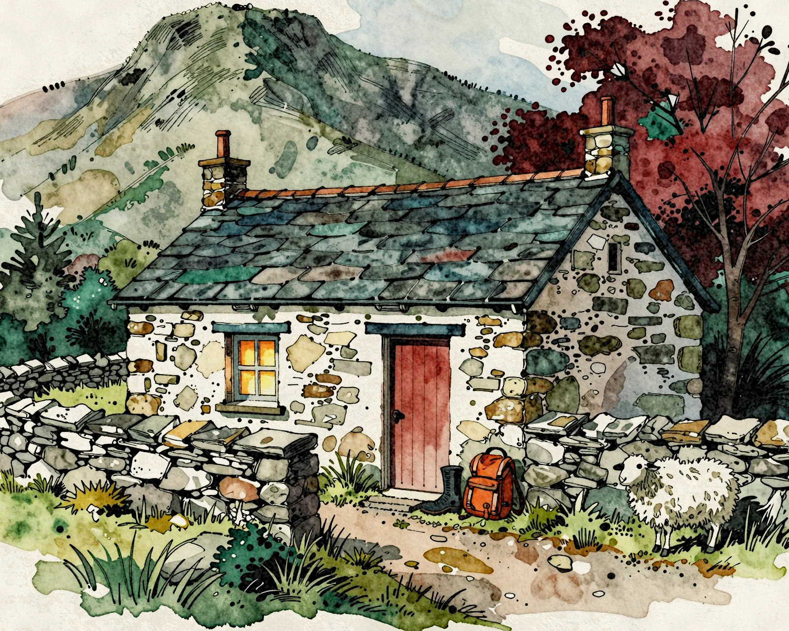
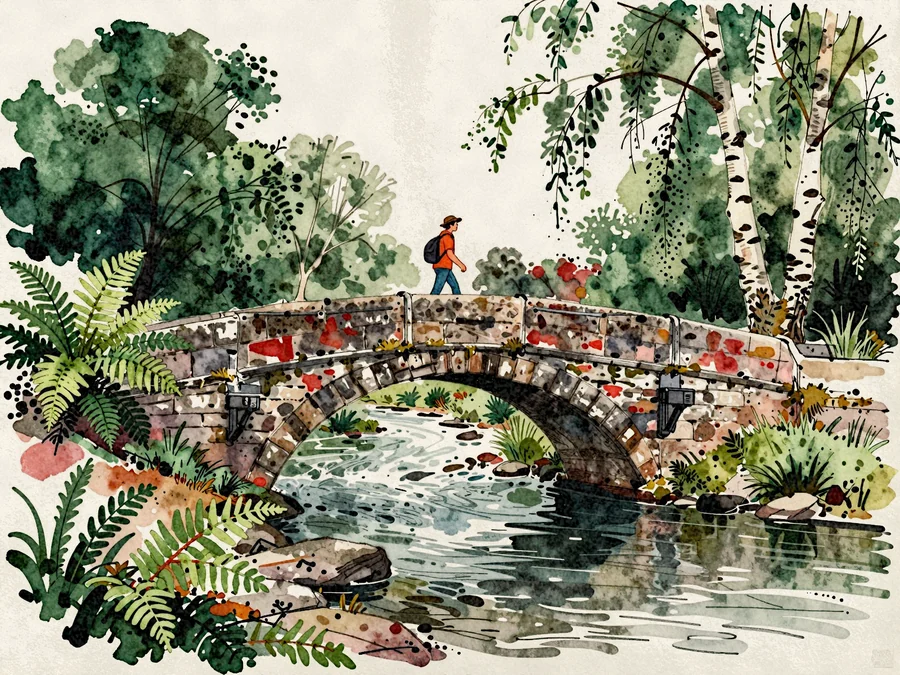
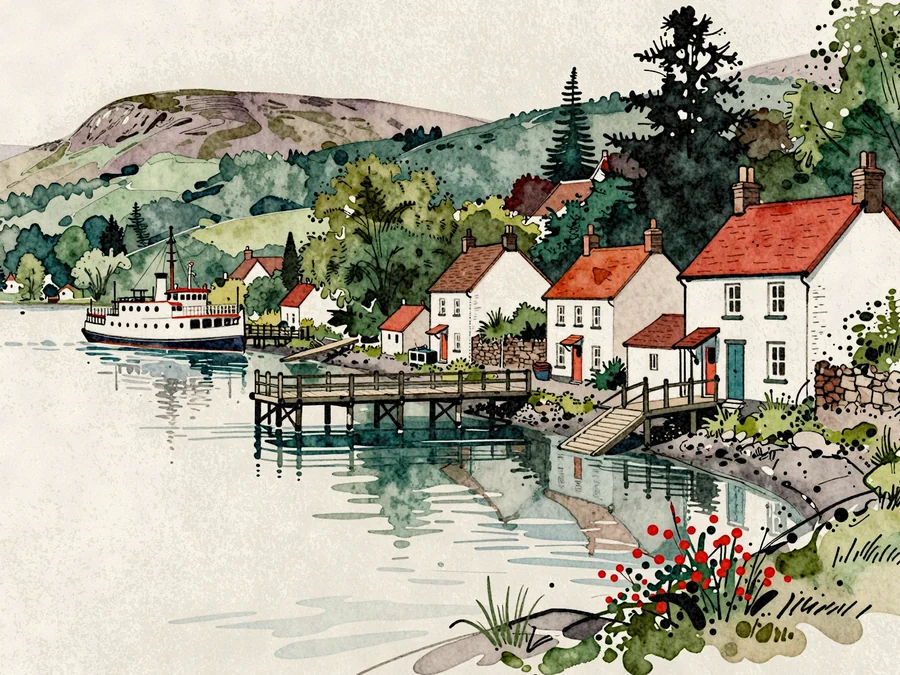
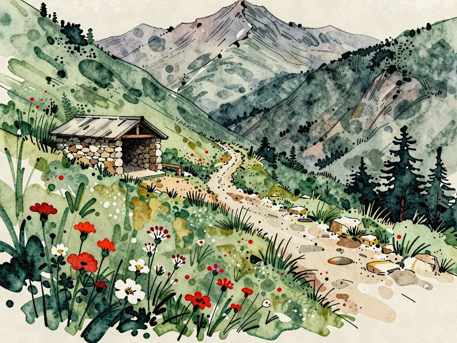
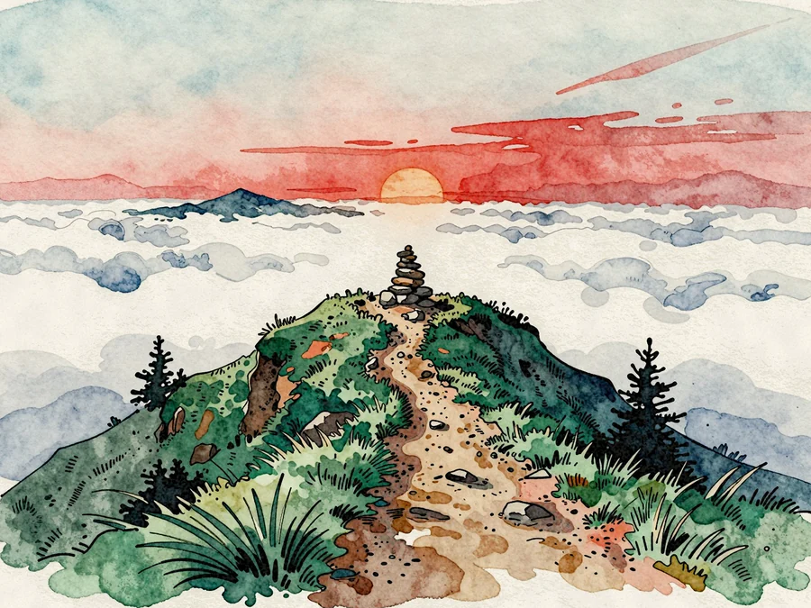
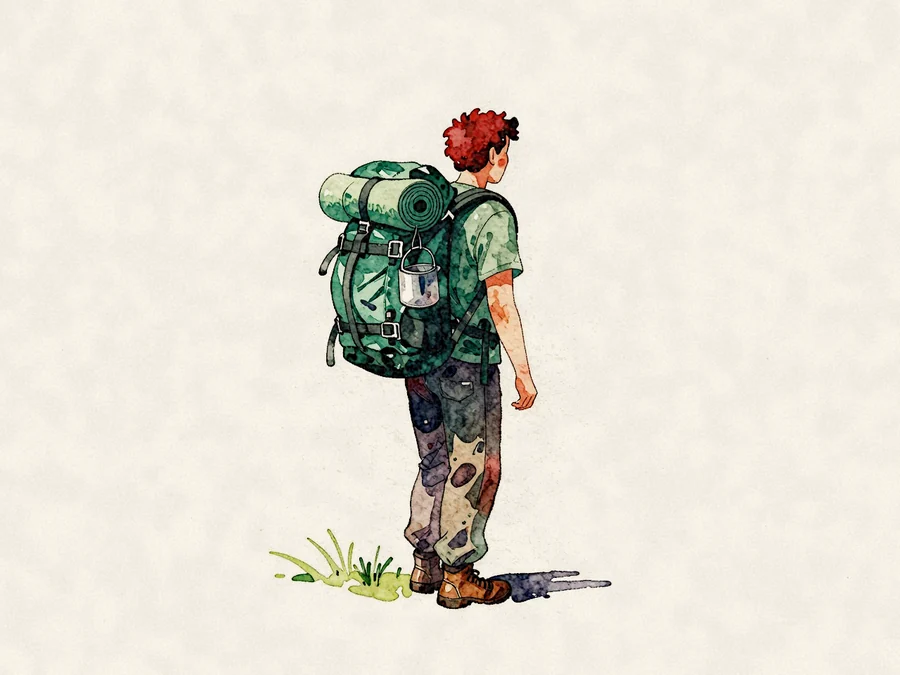
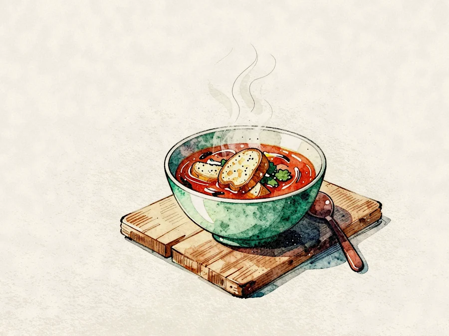
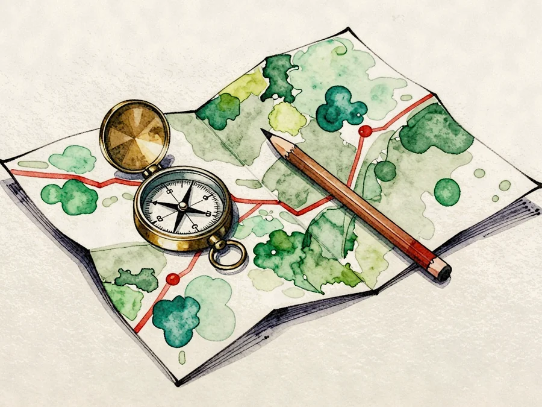

You walk. We do everything else.
Every morning your bag goes ahead by road while you take the ridges with a guide who knows each cairn by name. Every evening there is a hut, a hot shower and a pot of something on the stove.

A fire lit before you arrive.
Five old shepherds' huts, rebuilt in the same stone, a day's walk apart. Bunks with real bedding, drying rooms for wet boots, and a long table for supper.
- Five huts
- Bag transfer
- Suppers cooked
- Small groups
Five days, five huts.
Sixty-two kilometres of beck, ridge and lakeshore, at the pace of the slowest walker.




Carry a day bag. That's all.

Your pack goes ahead
Leave the big bag at the door each morning. It is on your bunk when you arrive.

A hot pot every night
Three courses cooked in the hut, from farms in the valley below, with a flask filled for tomorrow.

Someone who knows the way
Mountain leaders who grew up here, with the map in their heads and a plan for the weather.
I carried a sandwich and a raincoat for a week. Somebody else carried everything else.Morven Hale, walked the route in May (a fictional quote)
Before you book
How fit do I need to be?
Comfortable with six hours on your feet and a few steep climbs a day. The guide sets the pace by the group.
What if the weather turns?
Every day has a low route. The guide decides each morning, and the huts are warm whatever happens.
Can I walk on my own?
Yes. Self-guided weeks use the same huts and bag transfers, with a waterproof map and a phone number that answers.